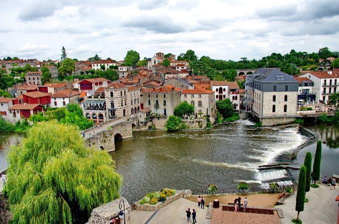

Bienvenue
à
CLISSON
OURS CITY

AVENTURE À CLISSON
Découvrez CLISSON autrement.
Rencontrerez-vous nos Ours ?
GPS à ta demande · Garde l’application visible pendant la marche.
LA GALERIE
0 / 14 oursons rencontrés
Touche un ours pour voir qui il est. Les autres se cachent sur le chemin.
Aller aux commandes
DÉMONSTRATION · GPS INACTIF
Rejoins le tracé
Chargement de la trace…
Prochaine annonce : —
Navigation pédestre indicative
GPS inactifTrace terre cuite · progression encre
Parcouru —Reste —
La Méditation de Papa Ours—
Parcouru —Reste —Écart —Précision —
Départ libre sur la boucle